تقديم galactic structure finder: البنى الحركية النجمية المتعددة لمجرة محاكاة ذات كتلة درب التبانة
الملخص
نقدّم النتائج الأولى لتطبيق نماذج المزائج الغاوسية في الفضاء الحركي النجمي للزخم الزاوي المطبع وطاقة الارتباط على مجرات NIHAO عالية الدقة، بغرض فصل النجوم إلى مكوّنات متعددة. ونعرض مثالاً على هذه الطريقة باستخدام نظير محاكى لمجرة درب التبانة، يضم مكوّنه النجمي: قرصين رقيقاً وسميكاً، وانتفاخين كلاسيكياً وشبهياً، وهالة نجمية. وتتفق خصائص هذه البنى النجمية جيداً مع التوقعات الرصدية من حيث الأحجام والأشكال والدعم الدوراني. ومن اللافت أن القرصين الحركيين يبيّنان مقاطع لكثافة الكتلة السطحية أكثر تركزاً مركزياً من المقاطع الأسية، في حين أن الانتفاخين والهالة النجمية أسية تماماً. ونتتبع الكتلة اللاجرانجية لكل مكوّن على حدة رجوعاً في الزمن لدراسة تاريخ تكوّنه. بين ونهاية بلوغ الهالة حالة التوازن الفيريالي، ، تفقد جميع المكوّنات جزءاً من زخمها الزاوي. ويفقد الانتفاخ الكلاسيكي القدر الأكبر ()، في حين يفقد القرص الرقيق القدر الأقل (). كوّن كلا الانتفاخين نجومهما في الموضع عند انزياح أحمر عال، بينما كوّن القرص الرقيق في الموضع، ولكن مع معدل ثابت خلال آخر Gyr. وتندمج النجوم المتراكمة ( من الكتلة النجمية الكلية) أساساً في القرص السميك أو الهالة النجمية، اللذين تكوّنا خارج الموضع بنسبة و من كتلتيهما المعنيتين. وتتاح سلسلة التحليل الخاصة بنا مجاناً على https://github.com/aobr/gsf.
keywords:
المجرات: المحتوى النجمي - المجرات: البنية - المجرات: الحركيات والديناميكيات - المجرات: المعاملات الأساسية - الطرائق: عددية1 مقدمة
لتصنيف المجرات المرصودة إلى أنواع متميزة تاريخ طويل (Sandage, 1961). وهذا التصنيف أكثر بكثير من تمرين تصنيفي مجرد، إذ تترتب عليه آثار كثيرة في دراسات الظواهر الفيزيائية غير المفهومة جيداً. ومن الأمثلة البارزة على ذلك: العلاقة بين الثقوب السوداء فائقة الكتلة (SMBHs) ومجراتها المضيفة، وتحديد مقاطع هالات المادة المظلمة (DM). حالياً، يتمثل الإجماع العام في أن كتل SMBH ترتبط ارتباطاً وثيقاً بتشتت السرعات النجمية لانتفاخات مجراتها المضيفة (Ferrarese & Merritt, 2000; Gebhardt et al., 2000; Häring & Rix, 2004)، مما يشير إلى أن الاثنين يتطوران على الأرجح تطوراً مشتركاً (ولكن انظر أيضاً Jahnke & Macciò, 2011). كما أن لحركيات أقراص المجرات تاريخاً طويلاً من الاستخدام لاستنتاج توزيعات المادة المظلمة الكامنة (Rubin et al., 1980). ومن ثم فإن نظرية دقيقة لتكوّن البنى النجمية المجرية، مثل الأقراص والانتفاخات، ستقود حتماً إلى قيود أضيق على هذه الظواهر المحيرة، فضلاً عن سد الثغرات في نماذج تكوّن المجرات عموماً.
في حين تُعرّف هذه البنى في الرصد بواسطة مقاطع لمعان متعددة تُلائم صور المجرات (مثلاً van der Wel et al., 2012)، لا توجد حتى اليوم صلة واضحة بينها وبين البنى النجمية الجوهرية المعرفة حركياً. وتوفر محاكيات المجرات عالية الدقة سبيلاً لردم هذه الفجوة، إذ تمتلك معلومات كاملة عن فضاء الطور النجمي (المواضع والسرعات)، وبذلك تتيح تعريفاً سليماً للبنى الحركية الجوهرية. كما يمكن إخضاع المحاكيات لمعالجة لاحقة باستخدام شفرات انتقال إشعاعي لإنشاء صور صورية يمكن تحليلها لاحقاً كما يجري في أرصاد المجرات (مثلاً Obreja et al., 2014; Guidi et al., 2016; Buck et al., 2017; Bottrell et al., 2017). وبهذه الطريقة، يصبح من الممكن من حيث المبدأ البحث عن علاقة كمية بين المورفولوجيا الضوئية للمجرة وبناها الحركية النجمية. لذلك من الضروري امتلاك أدوات لتعريف البنى الحركية النجمية المجرية في المحاكيات على نحو متين، وهذا تحديداً هو هدف هذا العمل.
في Obreja et al. (2016, يشار إليه فيما بعد بالورقة I) بيّنا كيف يمكن فصل الأقراص النجمية الديناميكية عن الأجسام الكروانية في محاكيات المجرات باستخدام خوارزمية تجميع في فضاء حركي متعدد الأبعاد. غير أن المجرات معروفة بأنها تستضيف أحياناً تنوعاً أكبر بكثير من البنى النجمية. وتُعتقد نجوم درب التبانة، على وجه الخصوص، بأنها تكوّن عدة مكوّنات: قرصاً رقيقاً وآخر سميكاً (Gilmore & Reid, 1983)، وانتفاخاً صندوقياً/فولياً (Okuda et al., 1977)، وعنقوداً نجمياً نووياً (Becklin & Neugebauer, 1968)، وقضيباً (Hammersley et al., 2000)، وهالة نجمية (Searle & Zinn, 1978). ولا تزال الأدلة على وجود انتفاخ كلاسيكي في درب التبانة موضع نقاش حالياً (مثلاً Bland-Hawthorn & Gerhard, 2016). وفي الدراسات خارج المجرية، توصف كثير من الحلزونيات القريبة المرئية على نحو قريب من الحافة وصفاً أفضل بقرص ذي مكوّنين لا بقرص واحد (Dalcanton & Bernstein, 2002; Yoachim & Dalcanton, 2006; Comerón et al., 2011; Comerón et al., 2014; Elmegreen et al., 2017). كما يبدو أن المناطق الداخلية من المجرات المرصودة تستضيف أحياناً انتفاخات و/أو قضباناً متعددة (مثلاً Athanassoula, 2005; Gadotti, 2009; Aguerri et al., 2009; Nowak et al., 2010; Kormendy & Barentine, 2010; Méndez-Abreu et al., 2014). شجعتنا كل هذه البيانات الرصدية على تحسين الطريقة الموصوفة في الورقة I كي تصبح قادرة على فك تداخل أكثر من مكوّنين حركيين في المحاكيات.
نعرض في هذه الورقة نتيجة تطبيق هذه الطريقة على مجرة محاكاة ذات كتلة شبيهة بدرب التبانة، ويشار إليها فيما بعد بـ MW، من عينة NIHAO (Wang et al., 2015). وقد أجرينا التحليل نفسه على ما مجموعه 25 مجرة من NIHAO، تمتد من المجرات القزمة إلى مجرات أكبر كتلة من درب التبانة ببضع مرات، ووجدنا توليفات متعددة من البنى النجمية. أما في هذه الورقة فاخترنا مجرة واحدة تشبه درب التبانة في بعض الجوانب المهمة، لتوضيح آلية عمل خط المعالجة لدينا. وتشكّل النتائج المتعلقة بالعينة الكاملة المؤلفة من 25 مجرة موضوع عمل مرافق (Obreja et al., 2018).
يتضح أن المجرة المعينة التي نستخدمها حالة اختبار تمتلك خمسة مكوّنات حركية نجمية: قرصاً رقيقاً وآخر سميكاً، وانتفاخاً كلاسيكياً وآخر شبهياً، وهالة نجمية، بخصائص تقع ضمن المجالات الرصدية المتوقعة للأشكال والسرعات والدعم الدوراني والزخم الزاوي النوعي. كما ندرس تطور هذه الخصائص للمكوّنات الخمسة كل على حدة، بغية معرفة المزيد عن أنماط تكوّنها.
في السنوات الأخيرة بدأت المحاكيات الكونية تحقق دقة كافية تجعل دراسة البنى النجمية المجرية ممكنة (مثلاً Scannapieco et al., 2010; Brook et al., 2012; Aumer et al., 2013; Stinson et al., 2013; Christensen et al., 2014; Hopkins et al., 2014; Marinacci et al., 2014; Schaye et al., 2015; Wang et al., 2015; Grand et al., 2017). وفي هذا السياق، نتيح شفرة التحليل الخاصة بنا مجاناً على أمل أن توفر الوسيلة اللازمة لدراسة ذاتية الاتساق لتكوّن مثل هذه البنى وتطورها عبر شفرات محاكاة مختلفة ذات مخططات عددية وتنفيذات تغذية راجعة مختلفة.
ينظم هذا العمل كما يلي. يعرض القسم 2 طريقة البحث عن البنى النجمية. وتوصف المجرة المحاكاة التي نستخدمها اختباراً في القسم 3. وتحلل وتناقش نتائج تطبيق طريقتنا على هذه المجرة في القسم 4. ويعطي القسم 5 خصائص البنى الحركية النجمية عند انزياح أحمر بالمقارنة مع درب التبانة، بينما يعرض القسم 6 نتائج تحليل المجرة من منظور خارج مجري. ويرد تطور البنى الحركية في القسم 7. وأخيراً نلخص نتائجنا ونبرز بعض الملاحظات الختامية في القسم 8.
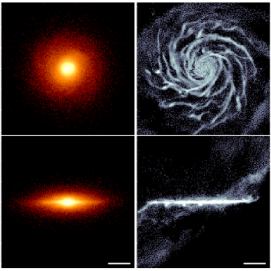
2 نماذج المزائج الغاوسية مطبقة على ديناميكيات المجرات
أدخل Abadi et al. (2003) الطريقة الأكثر استخداماً لتقسيم المجرات المحاكاة حركياً، وهي تستند إلى توزيع دائرية النجوم (مثلاً Brooks, 2008; Scannapieco et al., 2010, 2011; Brook et al., 2012; Martig et al., 2012; Kannan et al., 2015; Grand et al., 2017). معامل الدائرية هو النسبة بين الزخم الزاوي السمتي لجسيم ، والزخم الزاوي لمدار دائري يمتلك طاقة الارتباط نفسها ، حيث يكون اتجاه موافقاً لمحور تناظر المجرة.
اقترح Doménech-Moral et al. (2012) طريقة أخرى لا تستخدم معامل الدائرية فحسب، بل تستخدم أيضاً طاقة ارتباط الجسيمات ، ومركبة الزخم الزاوي المعرفة على أنها ، والمطبعة أيضاً إلى الزخم الزاوي للمدار الدائري. وهنا يمثّل الزخم الزاوي الكلي لجسيم نجمي.
يستخدم هؤلاء المؤلفون خوارزمية إيجاد العناقيد k-means (Schölkopf et al., 1998) بعدد معطى من المجموعات لفك تداخل مكوّنات المجرة النجمية في هذا الفضاء ثلاثي الأبعاد 3D، (، ، ). وتصغّر خوارزمية k-means مجموع مربعات المسافات لكل أزواج العناقيد، وهو ما يعرف أيضاً بالمسافة داخل العنقود أو «عطالة» العنقود. تحتاج هذه الطريقة إلى افتراض مقياس معين، وعلى الرغم من أنها تتقارب دائماً عند توافر عدد كاف من التكرارات، فقد يكون التقارب نحو حد أدنى محلي. وتتمثل القيود الرئيسية في k-means في افتراضي تحدب العناقيد وتساوي خواصها اتجاهياً. لذلك تلائم k-means المشعبات منتظمة الشكل والعناقيد الكروية ذات الأعداد المتقاربة تقريباً من العناصر.
في الورقة I عممنا طريقة Doménech-Moral et al. (2012) باستخدام نماذج المزائج الغاوسية (ويشار إليها فيما بعد بـ GMM) بدلاً من k-means، في فضاء ديناميكي ثلاثي الأبعاد مماثل 3D. GMM طريقة احتمالية تنتج ما يسمى إسناداً ليناً للجسيمات إلى العناقيد، إذ يمتلك كل جسيم احتمالاً مطبعاً للانتماء إلى مجموعة معينة. وكما في k-means، فهي طريقة تكرارية تستخدم خوارزمية التوقع–التعظيم لإيجاد معاملات الغاوسيات. وترخي هذه الطريقة افتراض تناظر العناقيد، إذ تسمح بمصفوفة تغاير حرة بالكامل. كذلك، لأنها تستخدم مسافة ماهالانوبيس إلى مراكز العناقيد (متوسطات الغاوسيات) معياراً للتصغير، فإنها لا تحيز النتائج نحو عناقيد متساوية الأوزان. وفي المسألة الخاصة بفصل المكوّنات الديناميكية لنجوم مجرة ما، تؤدي هذه الطريقة طبيعياً إلى نظائر للبنى الفرعية المرصودة مثل الأقراص الرقيقة و/أو السميكة، والانتفاخات الكلاسيكية و/أو الشبهية، و/أو الهالات النجمية، بأوزان كتلية غير مقيدة بأن تكون متساوية تقريباً.
في هذه الدراسة كلها، يشير الفضاء الديناميكي ثلاثي الأبعاد 3D إلى (، ، )، حيث تدل الأحرف الصغيرة على الزخم الزاوي وطاقة الارتباط النوعيين. وتقاس طاقات الارتباط النوعية إلى القيمة المطلقة لطاقة أكثر الجسيمات النجمية ارتباطاً في الهالة . لذلك فإن ، وبذلك يستبعد اعتماد كتلة المجرة/هالة المادة المظلمة، وكذلك بعدية الطاقة. وتتمثل خطوة حاسمة بين الدراسة السابقة والحالية في أن كمون الهالة يعاد الآن حسابه بافتراض العزلة. وبهذه الطريقة يمكن تجنب التوزيعات المرضية لطاقة الارتباط.
يمكن تنزيل حزمة التحليل الكاملة، التي نسميها galactic structures finder أو gsf، عبر https://github.com/aobr/gsf. وهي حزمة Python-Fortran90 مبنية على pynbody (http://pynbody.github.io, Pontzen et al., 2013) لتحميل لقطة المحاكاة وتوجيهها وتحويلها إلى وحدات فيزيائية، وعلى حزمة Python المسماة scikit-learn للتعلم الآلي (Pedregosa et al., 2011) لتشغيل خوارزمية التجميع. وأضيفت وحدة OpenMP Fortran90 لتنفيذ قوة الجاذبية N-body المباشرة باستخدام جميع الجسيمات في الهالة المعطاة. تفترض حزمة التحليل gsf أن لقطة المحاكاة عولجت مسبقاً باستخدام باحث عن الهالات. وفي هذه الدراسة استخدمنا Amiga Halo Finder (AHF, Knollmann & Knebe, 2009). وقد صممت حزمة التحليل لتعمل مباشرة مع المحاكيات التي يمكن تحميلها باستخدام pynbody.
سير عمل gsf هو كما يلي:
-
•
تُحمّل الهالة المحاكاة بواسطة pynbody وتحوّل إلى وحدات فيزيائية.
-
•
توجّه الهالة بحيث يكون محور موازياً للزخم الزاوي النجمي الكلي للمجرة.
-
•
يُحسب الكمون الثقالي عند موضع كل جسيم نجمي الناتج عن جميع الجسيمات (المادة المظلمة والباريونات) في الهالة بالجمع المباشر.
-
•
يُحسب الكمون الثقالي في المستوى الاستوائي عند مواضع نصف قطرية ثابتة بالجمع المباشر على جميع الجسيمات في الهالة.
-
•
عند الموضع نصف القطري نفسه على المستوى الاستوائي، تحسب الشفرة الزخم الزاوي النوعي للجسيمات على مدارات دائرية، وتبني علاقة .
-
•
تُفكك الزخوم الزاوية النوعية للجسيمات النجمية على الصورة ، وتُحسب قيم المقابلة لها بالاستيفاء على علاقة باستخدام القيم الدقيقة لطاقات ارتباطها المحسوبة سابقاً.
-
•
تمرر مصفوفة السمات الداخلة ذات عدد المدخلات المساوي لعدد الجسيمات النجمية إلى خوارزمية التجميع مع عدد المجموعات المراد البحث عنها.
-
•
تعيد خوارزمية التجميع مصفوفة احتمالات ، حيث هو فهرس الجسيم النجمي و يمتد من إلى . ولكل تكون الاحتمالات مطبعة: .
-
•
تنشئ الشفرة نوعين من الأشكال. يحتوي الأول على توزيعات الكتلة النجمية في معاملات الإدخال و و لكل واحدة من البنى التي تعثر عليها خوارزمية التجميع. أما النوع الآخر من الأشكال فينشأ لكل بنية من البنى على حدة، ويحتوي على كثافات الكتلة السطحية النجمية في الإسقاطين الوجهي والحافي، وعلى خرائط سرعة خط البصر في الإسقاط الحافي.
تُحفظ كل المعلومات ذات الصلة بالتشغيل في ملفات مختلفة. ويشمل ذلك: الفهارس النجمية ومصفوفة الاحتمالات ، والكمون الثقالي المعاد حسابه لجميع الجسيمات النجمية، وعلاقة ، ومصفوفة الدوران اللازمة لتحويل المحاكاة الخام إلى المستوى الاستوائي للمجرة.
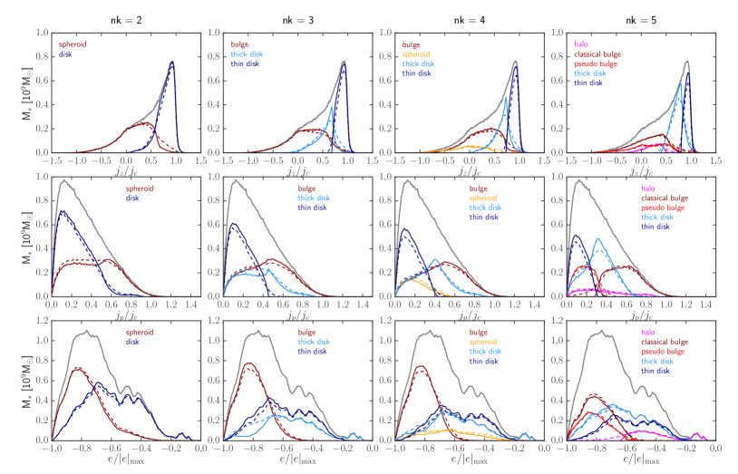
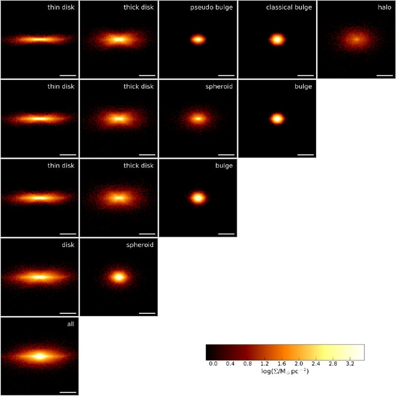
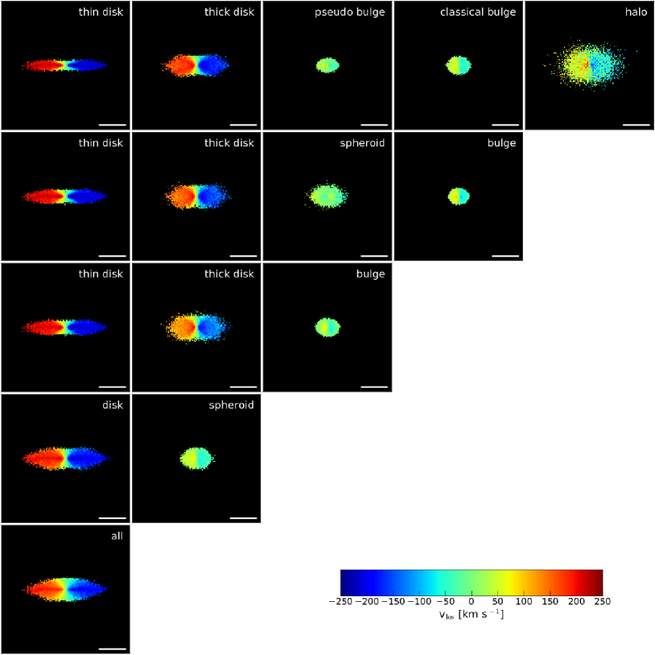
3 المحاكيات
مجموعة NIHAO (Wang et al., 2015) هي سلسلة من محاكيات التكبير الكونية الباريونية المنفذة بالنسخة المحسنة (Wadsley et al., 2017) من شفرة N-body SPH المسماة GASOLINE (Wadsley et al., 2004)، بافتراض كوسمولوجيا Planck القياسية (Planck Collaboration 2014). وتتضمن نسخة الشفرة المستخدمة في التشغيل إصلاحات للتعامل مع التكتلات الباردة الاصطناعية (Ritchie & Thomas, 2001) عن طريق توظيف تنفيذ اللزوجة الاصطناعية لدى Price (2008). ونواة SPH هي نواة Dehnen & Aly (2012)، بافتراض 50 جاراً. ولحل الصدمات المستحثة بالتغذية الراجعة على نحو أفضل، تستخدم الشفرة محدد خطوة الزمن لدى Saitoh & Makino (2009). وتنتشر المعادن كما نوقش في Wadsley et al. (2008). مصادر تسخين الغاز هي التأين الضوئي والتسخين الضوئي من خلفية فوق بنفسجية معتمدة على الانزياح الأحمر (Haardt & Madau, 2012)، بينما قنوات التبريد هي خطوط المعادن وتشتت كومبتون (Shen et al., 2010). يمكن لجسيمات الغاز ذات درجات الحرارة الأقل من 15000 K والكثافات الأعلى من 10.3 cm-3 أن تكوّن نجوماً وفق علاقة Kennicutt-Schmidt. تأخذ التغذية الراجعة النجمية عمليتين في الحسبان: موجات الانفجار من SNe II (Stinson et al., 2006) والتسخين المسبق للغاز في المنطقة التي سيقع فيها مثل هذا الحدث بواسطة النجم الضخم السلف لـ SN II (Stinson et al., 2013). ويعرف تنفيذ العملية الأخيرة أيضاً باسم “التغذية الراجعة النجمية المبكرة”. وتفترض الشفرة دالة كتلة ابتدائية Chabrier (IMF; Chabrier, 2003). ويستند إثراء الغاز بالعناصر الثقيلة إلى مردودات SNe Ia لدى Thielemann et al. (1986) ومردودات SNe II لدى Woosley & Weaver (1995).
تغطي محاكيات NIHAO ثلاث رتب مقدار في كتلة هالة المادة المظلمة، من الأقزام إلى المجرات الواقعة عند ذروة كفاءة تحويل الباريونات. في هذا النظام الكتلي يفترض أن تكون التغذية الراجعة من SN العامل المهيمن الذي يحد من تكوّن النجوم، بينما ينبغي أن يكون لتغذية AGN الراجعة (غير المضمنة في هذه النسخة من GASOLINE) أثر هامشي فقط. وتتبع جميع هذه المجرات بالفعل قيود المطابقة الوفيرية المعتمدة على الانزياح الأحمر (Moster et al., 2013; Behroozi et al., 2013)، وبذلك يمكن استخدامها أيضاً لدراسة تطور المجرات. وللغرض الخاص بدراسة تطور البنى النجمية المجرية، اخترنا عينة فرعية من 25 مجرة من NIHAO، تضم أساساً الطرف الكتلي الكبير من العينة الكاملة. والسبب في استبعادنا الأقزام المحاكاة هو أنه لا يتوقع عموماً أن تمتلك هذه الأنواع من المجرات تنوعاً كبيراً من المكوّنات الديناميكية النجمية الفرعية. كما أننا استبعدنا المجرات الضخمة التي تمتلك عند توزيعات كتلة نجمية مضطربة، نظراً إلى أن طريقتنا معدة للعمل على أنظمة بلغت حالة التوازن الفيريالي.
ومن ثم فقد أجري التحليل المعروض في هذا العمل على عينة من 25 مجرة محاكاة، اخترنا منها مجرة واحدة (g8.26e11) لنبين كيف يستطيع gsf فك تداخل بنى حركية نجمية ذات نظائر رصدية واضحة. ولهذه المجرة تحديداً كتلة كلية وكتلة نجمية ومورفولوجيا قريبة جداً من درب التبانة.
تمتلك المجرة g8.26e11 دقة كتلية قدرها 3.2105M⊙ و1.7106M⊙ لجسيمات الغاز والمادة المظلمة، على التوالي. وتبلغ تلييناتها الثقالية 400 pc و931 pc، على التوالي. وعند ، تمتلك هذه المجرة كتلة هالة مادة مظلمة مقدارها 9.01011M⊙، وكتلة نجمية مقدارها 4.71010M⊙، ونصف قطر فيريالي قدره 213 kpc. وتبلغ كتلة الغاز البارد (T15000 K) 4.21010M⊙، في حين يبلغ الكسر الفيريالي للغاز البارد 0.57. وتحترم هذه المجرة، شأنها شأن عينة NIHAO الكاملة، علاقات Tully-Fisher (Tully & Fisher, 1977) لكل من النجوم والباريونات (Dutton et al., 2017).
يبين الشكل 1 الإسقاطات الوجهية (أعلى) والحافية (أسفل) لكثافات الكتلة السطحية النجمية (يساراً) وللغاز البارد (يميناً) في g8.26e11. وتشبه هذه المجرة حلزونية كبيرة التصميم من الكون القريب، كما يمكن تقدير ذلك من إسقاط الغاز الوجهي.
4 البنى الحركية النجمية لمجرة ذات كتلة درب التبانة
نبدأ دراستنا ببيان كيف أن زيادة عدد المكوّنات، ، التي يطلبها gsf، تقود خوارزمية البحث بصورة طبيعية إلى بنى نجمية ديناميكية يمكن ربطها بالمكوّنات المختلفة التي يعتقد أنها جزء من المجرات المرصودة، ولا سيما MW.
يبين الشكل 2 نتائج تشغيل gsf على المجرة g8.26e11 عندما تزداد من إلى (من اليسار إلى اليمين)، برسم الكتلة في كل مكوّن بدلالة السمات الديناميكية الداخلة، و و (من الأعلى إلى الأسفل). وتشير الألوان المختلفة إلى المكوّنات المتعددة، إذ يُعطى كل منها اسماً مختصراً يظهر أيضاً في الشكل. وتمثل الخطوط المتصلة/المتقطعة إسنادات التجميع الصلبة/اللينة. يعني الوسم اللين أن لكل جسيم توليفة معينة من الاحتمالات للانتماء إلى مجموعات GMM مع امتداد من إلى ، بحيث . أما الوسم الصلب فيربط كل جسيم بالمجموعة الوحيدة التي تكون عندها عظمى. لذلك، عند بناء المنحنيات المتصلة يساهم كل جسيم نجمي بكل كتلته في المجموعة الواحدة التي ينتمي إليها على الأرجح، بينما في المنحنيات المتقطعة يوزع كل جسيم كتلته تناسبياً على المجموعات وفق احتمالاته . ويمكن استدعاء التشابه الكبير بين طريقتي الوسم سبباً وجيهاً لاستخدام الإسنادات الصلبة، وهذا ما نعتمده في بقية هذه الدراسة.
تحوّل النتائج في الشكل 2 إلى “مرصودات”، أي كثافات كتلة سطحية حافية وخرائط سرعة في الشكلين 3 و 4، على التوالي، حيث تتناقص من الأعلى إلى الأسفل. وقد اختيرت الأسماء المختصرة للمكوّنات المختلفة اعتماداً على الخرائط في الشكلين 3 و 4. وهذه الطريقة في اختيار أسماء المكوّنات ممكنة فقط في عينات صغيرة من المجرات. ونحن نستكشف حالياً إمكانات مختلفة لأداء هذه الخطوة آلياً.
يمتلك مخطط الدائرية لهذه المجرة قمة قوية قريبة من ولا يضم أي سمة مهمة أخرى (المنحنيات الرمادية في اللوحات العلوية من الشكل 2).
بالنسبة إلى التشغيل ذي ، يميز gsf الكتلة الواقعة تحت قمة الدائرية الحادة (أزرق داكن) عن التوزيع العريض الأكثر تناظراً والمتمركز قرب (أحمر داكن)، كما يتضح من اللوحة العلوية اليسرى. وبالنظر إلى المكوّنين نفسيهما في السمتين الديناميكيتين الأخريين (اللوحتان الوسطى والسفلى اليسريتان)، يتضح أن المكوّن الأول (الأزرق الداكن) أكثر انحيازاً نحو مدارات في المستوى الاستوائي، مع قمة في مقارنة بالمكوّن الثاني (الأحمر الداكن)، الذي يمتلك توزيعاً شبه مسطح بين و، وهو أقل ارتباطاً ثقالياً (اللوحة السفلى اليسرى). وتظهر كثافات الكتلة السطحية الحافية وخرائط السرعة المقابلة في الصفوف الرابعة من الشكلين 3 و 4 للمكوّنين المعطيين بالتوزيعين الأزرق الداكن والأحمر الداكن في العمود الأيسر من الشكل 2 الخصائص المتوقعة لـ الأقراص والأجسام الكروانية: تناظر محوري ومخطط سرعة عنكبوتي للأول مقابل تناظر كروي وقدر صغير فقط من الدوران المتماسك للثاني.
عند زيادة إلى ، يعاد توزيع مادة مكوّن القرص من إلى مكوّنين جديدين (العمود الأوسط الأيسر من الشكل 2)، يحتوي أحدهما على مادة من قرص فقط، بينما يضم الآخر أيضاً بعضاً من الجسم الكرواني . ويجمع المكوّن الجديد المبين بالأزرق الفاتح معظم المادة الأقل دعماً دورانياً من قرص ، من إلى (اللوحتان العلويتان في أقصى اليسار والوسط الأيسر)، والكتلة الأقل ارتباطاً ثقالياً من الجسم الكرواني (اللوحة السفلى في أقصى اليسار). ويمتلك المكوّن الجديد بالأزرق الفاتح في تشغيل مجالاً واسعاً في قدره ، بينما يصبح المكوّن المقابل بالأزرق الداكن أكثر انحصاراً في المستوى الاستوائي () من قرص . وكما يمكن توقعه من هذه التوزيعات، يظهر المكوّن الجديد (الأزرق الفاتح) خصائص قرص سميك في الخرائط المقابلة في الشكلين 3 و 4 (الصف الثالث)، بينما يبدو “القرص” الجديد بالأزرق الداكن شبيهاً بـ قرص رقيق. أما المكوّن الأقل دعماً دورانياً في هذه الحالة (الأحمر الداكن) فهو أكثر تراصاً من الجسم الكرواني ، كما يتضح من الصفوف الثالثة في الشكلين 3 و 4، ولذلك يسمى انتفاخاً.
في حالة ، أي العمود الثالث من الشكل 2 والصفوف الثانية من الشكلين 3 و 4، تعاد أجزاء من المادة الأقل دعماً دورانياً من القرص السميك ومن الانتفاخ إلى مكوّن أكثر امتداداً مدعوماً بتشتت السرعات، أي جسم كرواني (المنحنيات البرتقالية في الشكل 2). ولا يمتلك هذا الجسم الكرواني عملياً أي دوران صاف، ويغطي معظم مجال طاقة الارتباط على نحو منتظم.
أكبر قيمة لـ مستخدمة في هذه الدراسة هي . وبالنسبة إلى مجرة الاختبار g8.26e11، يؤدي إلى إعادة توزيع مهمة لكل المادة في المكوّنات ذات الدعم الكبير من تشتت السرعات، بما في ذلك القرص السميك. والمكوّن المستقر الوحيد هو القرص الرقيق، الذي يتغير تعريفه بأقل قدر من إلى ، ثم أخيراً إلى . والجانب اللافت جداً في هذه الحالة هو أن gsf يستطيع الآن فصل الهالة النجمية (المنحنيات الأرجوانية في لوحات العمود الأيمن من الشكل 2)، عن القرص السميك والجسم الكرواني عند . وفي توزيع طاقة الارتباط، تحتوي الهالة النجمية على كل الكتلة في قمة التوزيع المنفصلة منخفضة طاقة الارتباط وبعض المادة ذات . وتقابل هاتان السمتان المختلفتان في توزيع طاقة ارتباط الهالة النجمية المكوّنين الخارجي والداخلي المقترحين من أرصاد درب التبانة (مثلاً Carollo et al., 2007). ومن توزيعات الدائرية، تمتلك المكوّنات الثلاثة كلها عند قيم منخفضة وسالبة من قدراً ما من الدوران المتماسك، وانظر أيضاً خرائط السرعة الحافية في الصفوف العلوية من الشكلين 3 و 4. وحقيقة أخرى مثيرة في هي فصل المادة المدعومة بالتشتت الأقل انحصاراً في المستوى عن الأكثر انحصاراً فيه، كما يتضح من توزيعات الحمراء الداكنة مقابل الحمراء في اللوحة الوسطى اليمنى من الشكل 2. واعتماداً على مظهرهما في “المرصودات” المقابلة في الشكلين 3 و 4، يسمى الأول انتفاخاً كلاسيكياً والثاني انتفاخاً شبهياً (Kormendy & Kennicutt, 2004).
وخلاصة القول إن تشغيل gsf بقيمة للمجرة g8.26e11 ينتج قرصاً رقيقاً وقرصاً سميكاً وانتفاخاً كلاسيكياً وانتفاخاً شبهياً، وهالة نجمية. وفي الأقسام التالية نبيّن أن هذه البنى الحركية تتفق مع ما تقترحه النماذج النظرية، وتعرض كذلك خصائص مرئية في البيانات الحقيقية.
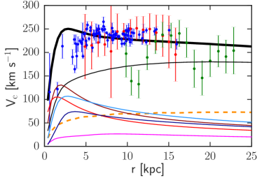
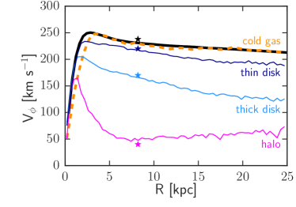
5 منظور الجوار الشمسي
للحصول على تقييم كمي لمدى التشابه بين g8.26e11 والمجرة، يبين الشكل 5 مقاطع السرعة الدائرية الكلية ومساهمات البنى النجمية المختلفة والغاز والمادة المظلمة فيها (اللوحة اليسرى)، ومقاطع السرعات الدورانية للأقراص والهالة النجمية (اللوحة اليمنى). نستخدم الحرف الصغير للإشارة إلى نصف القطر ثلاثي الأبعاد 3D، والحرف الكبير للإشارة إلى نصف القطر المسقط. وتُرسم فوق ذلك في اللوحة اليسرى السرعات الدائرية الكلية لـ MW المشتقة من أرصاد: مايزرات مرتبطة بنجوم فتية ضخمة لدى Reid et al. (2014) (نقاط زرقاء)، ونجوم عمالقة ذات تكتل أحمر لدى López-Corredoira (2014) (نقاط حمراء)، ونجم فرع أفقي أزرق لدى Kafle et al. (2012). ونظراً إلى أن g8.26e11 لم تحاكَ خصيصاً لتشبه MW، فإن الاتفاق بين منحنى سرعتها الدائرية الكلية (المنحنى الأسود السميك) وهذه الأرصاد ملحوظ جداً عند أنصاف أقطار kpc. وعند أنصاف أقطار أصغر، تمتلك MW القضيب المجري المسؤول عن الانخفاض في عند kpc كما تكشفه ديناميكيات غاز HI (مثلاً Sofue et al., 2009, والمراجع الواردة فيه). ومن ناحية أخرى، لا تمتلك المجرة المحاكاة قضيباً، بل انتفاخاً كلاسيكياً وآخر شبهياً، مما يؤدي إلى صاعد تماماً عند kpc.
في اللوحة اليمنى من الشكل 5، يرسم منحنى السرعة الدائرية الكلية للمجرة المحاكاة (أسود سميك) مع السرعات الدورانية للقرصين النجميين الرقيق والسميك، والهالة النجمية والغاز البارد. وتحسب مقاطع السرعة الدورانية كمتوسطات موزونة بالكتلة لـ ، حيث هي مركبة سرعة الجسيم على امتداد اتجاه الدوران المحلي في إطار الإحداثيات الأسطوانية المرجعي لمركز المجرة. ونذكّر بأن المحاكاة موجهة بحيث يكون محور في اتجاه الزخم الزاوي النجمي الكلي. أما المركبتان الأخريان لسرعة الجسيم في هذا الإطار المرجعي فهما السرعتان القطرية والعمودية . وتتمثل سمة مهمة واضحة في هذه اللوحة في أن السرعة الدائرية الكلية تتتبعها على أفضل وجه حركة الغاز البارد (المنحنى البرتقالي المتقطع)، بينما يمتلك القرص النجمي الرقيق (الأزرق الداكن) قيمة km s-1 أقل في . وتمثل النجمتان الزرقاء الداكنة والزرقاء الفاتحة في الرسم قياسات MW كما نشرها Haywood et al. (2013) للقرصين الرقيق والسميك في الجوار الشمسي بقيمي km s-1 و km s-1، على التوالي، وهما قريبتان جداً من القيم المقابلة لـ عند نصف القطر الشمسي kpc في المحاكاة ( و km s-1، على التوالي). ومن المهم ملاحظة أن Haywood et al. (2013) يميزون قرصي MW اعتماداً على أعمار النجوم ومواضعها في مستوى [Fe/H]-[/Fe]. وتعطي النجمة الأرجوانية الدوران التقريبي للهالة النجمية عند (Bond et al., 2010)، بينما تمثل النجمة السوداء القيمة الشمسية البالغة km s-1 (Bland-Hawthorn & Gerhard, 2016, والمراجع الواردة فيه).
إحدى طرائق قياس سماكة القرص هي تشتت السرعة العمودية. ولمقارنة قرصي المجرات المحاكاة مع نتائج MW، اخترنا جواراً شمسياً عند kpc و kpc. ويبلغ تشتت السرعة في الاتجاه العمودي للقرص السميك في g8.26e11 عند قيمة km s-1، وللقرص الرقيق km s-1. ولم تتقارب الدراسات المختلفة لـ MW بعد على قيمة واحدة لكل من الخاصين بالقرصين، نظراً إلى الاختلافات في دوال اختيار المسوح، وتغطية السماء، والنمذجة الديناميكية، وتعريف الرقيق/السميك. وبالنسبة إلى قرص MW السميك، وجد Robin et al. (2017) قيماً منخفضة تصل إلى km s-1، بينما حصل Binney (2012) على في المجال [31،65] km s-1. كما وجد Robin et al. (2017) أدنى القيم لقرص MW الرقيق، بين و km s-1، بينما وجد Binney (2012) قيماً في المجال [20،27] km s-1. لذلك يمكننا أن نستنتج أن g8.26e11 نظير واقعي لـ MW من منظور ديناميكيات الجمهرة النجمية في الجوار الشمسي.
عالمياً، تتوزع الكتلة النجمية لـ g8.26e11 كما يلي: في القرص الرقيق، و في القرص السميك، و في الانتفاخ الكلاسيكي، و في الانتفاخ الشبهي، والباقي في الهالة النجمية. لذلك، من منظور ديناميكي، تمتلك g8.26e11 نسبة كتلة انتفاخ إلى المجموع () مقدارها 0.46، بجمع مساهمات الانتفاخين والهالة النجمية. وللمقارنة، يقدر أن درب التبانة تمتلك (انظر المراجعة لدى Bland-Hawthorn & Gerhard, 2016).
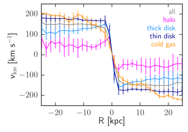
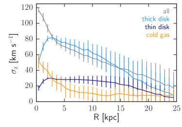
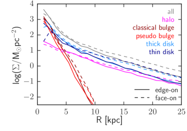
6 المجرة المحاكاة منظورة كجسم خارج مجري
في المجرات الخارجية، مع ذلك، لا يمكن قياس مقاطع مباشرة كما هي مبينة في اللوحة اليمنى من الشكل 5. وبالنسبة إلى الأجسام خارج المجرية تأتي المعلومات الحركية بدلاً من ذلك على هيئة حقول سرعة خط البصر ، مثل الحقل المبين في الصف السفلي من الشكل 4 للجمهرة النجمية الكلية في g8.26e11.
ولمقارنة المحاكاة بالمجرات الخارجية المرصودة، استخرجت مقاطع قطرية لسرعة خط البصر على امتداد المحور الرئيسي (الأفقي) في الشكل 4، باستخدام شق عرضه 1.6 kpc. وتبين اللوحة اليسرى من الشكل 6 المقاطع القطرية لـ للقرصين الرقيق (أزرق داكن) والسميك (أزرق فاتح)، والهالة النجمية (أرجواني)، وجميع النجوم (رمادي) والغاز البارد (برتقالي) للمجرة المحاكاة g8.26e11. ومن أول ما يلاحظ في هذه اللوحة أن مقاطع لكل من القرص الرقيق (أزرق داكن) وجميع النجوم (رمادي) تصبح مسطحة بعد kpc، إذ يتشبع الأول عند km s-1 والأخير عند km s-1. ويمكن ملاحظة اتجاه مشابه للهالة النجمية التي تتشبع عند km s-1. وعلى العكس من ذلك، يمتلك القرص السميك مقطع سرعة خط بصر يتناقص مع نصف القطر، وهو في المتوسط أقل بنحو km s-1 من قرص رقيق. وفي المجرات الخارجية المرصودة لا يمكن قياس للهالات النجمية عند أنصاف أقطار صغيرة كهذه ( kpc)، لأن السرعة الملفوفة يهيمن عليها بشدة القرص أو الأقراص، ولأن الهالات النجمية أخفت بكثير من المكوّنات المركزية.
ونلاحظ أيضاً أن مقاطع للقرصين الرقيق والسميك أدنى بكثير من المقابلة لهما عند جميع أنصاف الأقطار . وينطبق الأمر نفسه على الغاز البارد. وقد تكون لهذه الفروق في السرعات الدورانية تبعات مهمة على ما يستنتج من الدراسات الرصدية بشأن التوزيع النجمي الجوهري، وبالتالي بشأن تقديرات كتلة هالة المادة المظلمة الداخلية. وما يكون متاحاً عادة في أرصاد حقول السرعة النجمية خارج المجرية هو خطوط امتصاص تنتج أساساً في أجواء النجوم الفتية (مثلاً Yoachim & Dalcanton, 2008; Martinsson et al., 2013). غير أنه إذا افترض أن مقاطع السرعة الدورانية المشتقة بهذه الطريقة تمثل خاصية للتوزيع النجمي الكامل، فستعد المجرات أبرد ديناميكياً، أي أكثر قرصية، مما هي عليه في الحقيقة. لذلك نعتقد أن السرعات الدائرية للمجرات الخارجية المشتقة من حركيات الغاز و/أو النجوم قد تكون ناقصة التقدير بدرجة مهمة أيضاً. غير أن قياس هذا الانحياز كمياً يقع خارج نطاق هذه الورقة.
تعرض اللوحة اليمنى من الشكل 6 مرصوداً مجرياً آخر، هو مقطع تشتت السرعة العمودية . وتعطى تشتتات السرعة العمودية للقرصين الرقيق والسميك، ولكل النجوم والغاز البارد بالمنحنيات الزرقاء الداكنة والزرقاء الفاتحة والرمادية والبرتقالية، على التوالي. وكما يتوقع من الأقراص النجمية الرقيقة، يتناقص مقطع تشتت السرعة العمودية ببطء مع نصف القطر، ويمكن تقريبه بثابت قدره km s-1. ويبدو للقرص الرقيق مختلفاً جداً عن نظيره للمجرة كلها، الذي يقربه القرص السميك على نحو أفضل بكثير عند kpc. ويتناقص للقرص السميك تقريباً خطياً مع نصف القطر المسقط، من km s-1 عند kpc إلى km s-1 عند kpc. وتنتج القمة المركزية في للمجرة كلها عن مكوّنات الانتفاخ وتبلغ km في المركز تماماً. ويتناقص للغاز البارد تقريباً خطياً بين km s-1 في المركز و km s-1 عند kpc، ثم يبقى ثابتاً بعد ذلك. وبوجه عام، من حيث التطبيع وشكل مقاطع سرعة خط البصر الحافية ومقاطع تشتت السرعة العمودية، تشبه g8.26e11 المجرة المرصودة UGC 00448 بعد تصحيحها لتأثيرات الميل (الملحق D من Martinsson et al., 2013). وUGC 00448 مجرة أقل كتلة من المجرة المحاكاة، بكتلة نجمية مقدارها M⊙ مشتقة باستخدام عرض خط HI لدى Staveley-Smith & Davies (1988) وعلاقة Tully-Fisher لدى Dutton et al. (2017).
يعطي الشكل 7 مقطع كثافة الكتلة السطحية النجمية الكلية (المنحنيات الرمادية) في المنظورين الحافي (رمادي متصل) والوجهي (رمادي متقطع). ولاستعادة هذا النوع من المقاطع من قياس ضوئي للمجرات المرصودة، لا بد من افتراض نسبة أو نسب كتلة إلى ضوء (). وتعرض اللوحة نفسها أيضاً المقاطع المقابلة في كلا المنظورين لكل المكوّنات الحركية النجمية الخمسة. تبلغ كثافة الكتلة السطحية النجمية الكلية ذروتها في المركز ( kpc)، وتلائم جيداً بدالة أسية عند أنصاف أقطار أكبر ( kpc)، بأطوال مقياس قدرها و kpc في المنظورين الحافي والوجهي، على التوالي. وللمقارنة، يبلغ طول مقياس UGC 00448 في المقطع المصحح وجهياً في حزمة K قيمة kpc (Martinsson et al., 2013). وتعرض UGC 00448 توزيع ضوء قطرياً مشابهاً جداً لتوزيع الكتلة النجمية في g8.26e11، مع قمة مركزية ومقطع أسي خالص عند kpc. وتصنف هذه المجرة المرصودة على أنها SABc.
عند النظر إلى مساهمات المكوّنات الخمسة في من المنظور الحافي، يمتد القرصان كلاهما حتى ، ولكنهما لا يمتلكان مقاطع أسية خالصة. والقمة القرصية في المركز سلوك متوقع من تطور الأقراص الرقيقة التي تحفظ زخمها الزاوي أثناء بلوغ حالة طاقتها الدنيا (Lynden-Bell & Kalnajs, 1972). ومن منظور وجهي يمتلك نوعا القرصين انخفاضاً في المركز. وهذه الانخفاضات نتيجة مباشرة لخوارزمية GMM التي تسند احتمالات صغيرة جداً للجسيمات في المنطقة الداخلية جداً للانتماء إلى الأقراص. وبملاءمة المقاطع للقرصين بدالة أسية في المجال kpc، حصلنا على أطوال مقياس قدرها و kpc للقرصين الرقيق والسميك في المنظور الحافي، و و kpc في المنظور الوجهي، على التوالي. وفي حالة المجرة، يمتلك القرصان قيم في مجال مماثل، kpc (مثلاً Piffl et al., 2014; Sanders & Binney, 2015; Binney & Piffl, 2015).
ومن اللافت أن المكوّنات الثلاثة المدعومة بالحركات العشوائية، في المنظورين الوجهي والحافي على حد سواء، أي الانتفاخان الكلاسيكي والشبهي والهالة النجمية، تعرض مقاطع أسية خالصة. ومع أن ذلك متوقع في بنى مثل المجرات الكروانية منخفضة الكتلة (Graham & Guzmán, 2003; Koda et al., 2015; van Dokkum et al., 2015) أو الانتفاخات الشبهية (Fisher & Drory, 2008; Gadotti, 2009)، فإنه لا يتوقع عموماً من الانتفاخات الكلاسيكية، التي يعتقد أنها تمتلك مؤشرات Sérsic بقيم . غير أن مؤلفين آخرين، مثل Andredakis & Sanders (1994) أو Andredakis et al. (1995)، جادلوا بأن الانتفاخات تغطي مجالاً مستمراً من المقاطع، من أسية خالصة إلى شديدة التركز المركزي.
لو حاول المرء ملاءمة لكل النجوم، لكفى مزيج من مقطع أسي ومقطع Sérsic، أو حتى مقطع Sérsic وحده. ويمكن تفسير الانحياز الرصدي نحو قيم كبيرة من للانتفاخات جزئياً بالتوقع أن القرص أسي خالص ويصل إلى المركز. يفرض هذا الشرط على القرص أن يكون للمكوّن المركزي تابع ملاءمة مقعر، أي قيمة كبيرة من . غير أن المعاملات الناتجة عن مثل هذه الملاءمات قد تحيز بشدة الاستنتاجات المستخلصة بشأن تكوّن المجرات (مثلاً Mosenkov et al., 2014; Bernardi et al., 2014).
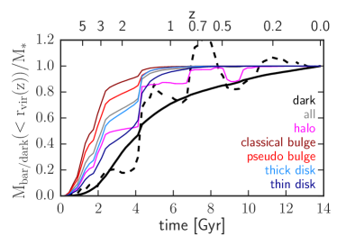
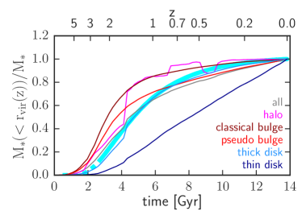
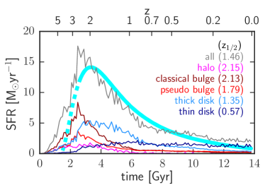
7 تكوّن البنى النجمية
لتوفير صلة مع تطور هالة المادة المظلمة، يبين الشكل 8 تراكم كتلة المادة المظلمة (أسود سميك متصل) والزخم الزاوي النوعي (أسود سميك متقطع) على امتداد الفرع الرئيسي لشجرة الاندماجات. وتطبع الكميتان إلى قيمتيهما المعنيتين عند . كما يعطي الشكل كتل الأسلاف الباريونية المطبعة داخل نصف القطر الفيريالي على امتداد الفرع الرئيسي لشجرة الاندماجات للمكوّنات في g8.26e11 (منحنيات ملونة رفيعة). وتبدو تجمعات الكتلة الباريونية مثل دوال درجية، في حين أن نمو كتلة هالة المادة المظلمة سلس جداً، ولا يتضمن إلا قفزة صغيرة واحدة عند ، تمثل الانتقال من معدل نمو كبير إلى معدل صغير يتناقص باستمرار. وتمثل هذه الدرجة الصغيرة آخر اندماج مهم على مقياس هالة المادة المظلمة. يجلب الاندماج الكبير عند ما يقارب نصف الكتلة الباريونية النهائية للقرص الرقيق، لكنه يجلب أقل من من كتلة الانتفاخ الكلاسيكي. كما يتضح من المنحنى الأسود السميك المتقطع أن هذا الاندماج مسؤول عن جزء كبير من دوران هالة المادة المظلمة، .
يدعم الشكل 8 فكرة أن البنى الحركية نفسها تتجمع أيضاً بالتسلسل الزمني نفسه الذي تتحول فيه كتلتها إلى نجوم. فبصورة أساسية، يتكوّن الانتفاخ الكلاسيكي أولاً، يليه الانتفاخ الشبهي، ثم القرص السميك، ولاحقاً القرص الرقيق. ومن هذا المنظور، لا تنسجم الهالة النجمية مع هذا التسلسل، إذ تعرض نمط تجمع أكثر تقطعاً بكثير. وبعد عد القفزات الكبيرة في تجمع الكتلة الباريونية للهالة النجمية (المنحنى الأرجواني)، يمكن القول إن ما يقارب من مادة أسلافها جاء مع الاندماجات الصغرى عند و ومع الاندماج الكبير عند . وهذا السلوك، مع القفزات المهمة في كتلتها النجمية المطبعة المقابلة (المنحنى الأرجواني)، مؤشر واضح على أن جزءاً كبيراً من كتلة أسلاف هذه الهالة النجمية دخل داخل على هيئة نجوم متكوّنة مسبقاً.
يبين الشكل 9 معدل تكوّن النجوم، ويشار إليه فيما بعد بـ SFR، (يميناً) والكتل النجمية المطبعة داخل نصف القطر الفيريالي على امتداد الفرع الرئيسي لشجرة الاندماجات (يساراً) للمكوّنات في g8.26e11. ويظهر SFR للمجرة كلها بالرمادي قمة بارزة بين و، وانخفاضاً سريعاً في الشدة بين و، ثم انخفاضاً أبطأ بكثير بعد ذلك وصولاً إلى قيمة مقدارها . ويرسم فوقه باللون السماوي تاريخ SFR المعاد بناؤه لمجرة ذات كتلة MW لدى van Dokkum et al. (2013). ويشبه تاريخ SFR المشتق رصدياً هذا كلاً من شكل g8.26e11 وتطبيعه (المنحنى الرمادي) على نحو جيد، باستثناء إزاحة طفيفة لـ SFR في المحاكاة نحو أزمنة أبكر.
عند النظر إلى المكوّنات الخمسة منفردة، تظهر المكوّنات الثلاثة المدعومة بالتشتت قمماً واضحة لـ SFR عند انزياح أحمر عال، ، وقليلاً جداً من SFR (الانتفاخان) إلى لا SFR (الهالة النجمية) بعد . ينمو القرص الرقيق كتلته النجمية بمعدل ثابت تقريباً قدره بعد قمم الانتفاخات والهالة النجمية فقط. أما القرص السميك فيعرض، من جهة أخرى، أوجه شبه أكبر مع المكوّنات التي يهيمن عليها التشتت مقارنة بالقرص الرقيق، مع أنه يبلغ SFR الأعظمي لاحقاً، ويكون الانخفاض عند الانزياحات الحمراء الأدنى أكثر تدرجاً. وتتفق حقيقة أن القرص السميك يكوّن معظم نجومه في الأزمنة المبكرة مع السيناريو الذي اقترحه Brook et al. (2004)، الذين وجدوا أن نجوم القرص ذات السرعات العمودية الأعلى تميل إلى أن تولد تفضيلياً خلال حقبة الانزياح الأحمر العالي ذات الاندماجات المتكررة والفوضوية.
تعرض أزمنة تكوّن النجوم في البنى الحركية الخمس لـ g8.26e11 اتجاهاً واضحاً. وتعطي الأرقام الملونة في الزاوية العليا اليمنى من لوحة SFR في الشكل 9 انزياحات تكوّن نصف الكتلة النجمية للمكوّنات . وتروي هذه القيم قصة تسلسل في تكوّن الكتلة النجمية، حيث تتكوّن نجوم الهالة أولاً ()، تليها نجوم الانتفاخ الكلاسيكي ()، ثم الانتفاخ الشبهي ()، فالقرص السميك () وأخيراً نجوم القرص الرقيق (). وتقع قيمة للمجرة كلها بين قيمتي الانتفاخ الشبهي والقرص السميك. غير أن هذا التسلسل لا يعني بالضرورة أن البنى الحركية نفسها تكوّنت، بمعنى “تجمعت”، بهذا الترتيب.
تمثل اللوحة اليسرى من الشكل 9 تجمع الكتلة النجمية للمكوّنات المختلفة في g8.26e11. وتعرض القرص الرقيق والانتفاخان منحنيات تزداد بسلاسة، مما يوحي بأن SFR حدث في الموضع لهذه البنى النجمية الثلاث. ومن اللافت أن نمط التكوّن هذا للانتفاخات الكلاسيكية لا يحبذ سيناريو الاندماج (مثلاً Aguerri et al., 2001) في الحالة الخاصة بهذه المجرة المحاكاة. غير أن القرص السميك يعرض قفزة كبيرة نسبياً عند الانزياح الأحمر نفسه لأكبر قفزة مرئية في الهالة النجمية. وتعد هذه السمة مؤشراً واضحاً إلى اندماج يؤدي إلى أن تندمج نجوم الجسم الساقط لاحقاً في القرص السميك أو الهالة النجمية للمجرة الرئيسية. وعالمياً، تمتلك الهالة النجمية أكبر كسر من النجوم المولودة خارج الموضع ()، يليها القرص السميك بقيمة ، وتنتهي السلسلة بالقرص الرقيق بقيمة لا تتجاوز . وقد كوّن الانتفاخان الكلاسيكي والشبهي في هذه المجرة كل نجومهما في الموضع.
كما فعلنا مع SFR، رسمنا فوق اللوحة اليسرى من الشكل 9 تجمع الكتلة النجمية المقيد رصدياً لمجرة ذات كتلة MW لدى van Dokkum et al. (2013) (المنحنى السماوي). وهذا المنحنى الرصدي قريب نسبياً من المنحنى الرمادي الذي يمثل التطور الكلي للمجرة المحاكاة. وعند الفحص الدقيق، يتبين أن المكوّن الأكثر شبهاً بالأرصاد هو القرص السميك. لذلك فإن g8.26e11 لا تشبه MW عند انزياح أحمر فحسب، بل تمتلك أيضاً تاريخ تجمع/SFR مشابهاً جداً لما تقترحه الدراسة الرصدية لدى van Dokkum et al. (2013). ويعرض هذا الرسم بوضوح تسلسلاً في تجمع الكتلة النجمية مشابهاً جداً لتسلسل تاريخ SFR، باستثناء الهالة النجمية. فالهالة النجمية لـ g8.26e11 هي إلى حد كبير نتاج للاندماجات.
7.1 تطور الدورانات والأحجام والأشكال والدعم الدوراني
تشير خصائص البنى الحركية لـ g8.26e11 الموصوفة أعلاه إلى المجرة عند انزياح أحمر . ولدراسة تطورات الخصائص المختلفة نتتبع عائداً الكتلة اللاجرانجية المعرفة عند على أنها تنتمي إما إلى أحد المكوّنات الحركية أو إلى المجرة (النجوم) ككل. والهدف هو قياس كيفية تطور المكوّنات الحركية الخمسة لـ g8.26e11 في الخصائص التي تميزها بعضها عن بعض، أي: الأحجام والأشكال والزخوم الزاوية والدعم الدوراني. وتحسب هذه الكميات كلها بوحدات فيزيائية.
لكل مكوّن عند زمن معطى ، نحسب أولاً موضع مركز كتلته ، وسرعته ، باستخدام جميع جسيمات الباريونات التي تمثل أسلاف الجسيمات النجمية للمكوّن عند ، ، ونحدث المواضع والسرعات بالنسبة إلى إطار مركز الكتلة المرجعي. أما الكتل المستخدمة للجسيمات في أي زمن، فهي كتلها النجمية المقابلة من ، . ومن أجل تفسير أكثر مباشرة لتطورات الكميات الديناميكية، يحافظ على اتجاه صندوق المحاكاة ثابتاً في كل خطوة زمنية، بحيث يكون محور موازياً للزخم الزاوي النجمي الكلي للمجرة عند انزياح أحمر .
نستخدم مصطلح الحجم للإشارة إلى نصف قطر نصف الكتلة ثلاثي الأبعاد 3D، ، ومصطلح الشكل من أجل الإهليلجية المعرفة كما يلي:
| (1) |
حيث تحسب أنصاف المحاور و من القيم الذاتية لموتر العطالة للجسيمات ، اتباعاً لـ González-García & van Albada (2005). ويعرّف موتر العطالة كما يلي:
| (2) |
مع دوران و على الإحداثيات الديكارتية. وتحسب أنصاف المحاور من:
| (3) | ||||
سيشار إلى الزخم الزاوي النوعي باسم دوران المكوّن ، لأنه يحسب بالنسبة إلى الإطار المرجعي لمجموعة الجسيمات :
| (4) |
ولتقدير مقدار الدعم الدوراني نستخدم كسر تشتت السرعة المعرف كما يلي:
| (5) |
وبالنسبة إلى مجموعة جسيمات بسرعات متناحية الخواص في إطارها المرجعي، نتوقع أن يكون هذا الكسر صفراً لأن . أما إذا كانت سرعات الجسيمات محصورة في مستوى ، فإن ، وينبغي أن يكون الكسر واحداً. نستخدم لتقدير الدعم الدوراني بدلاً من الأكثر تقليدية (Davies & Illingworth, 1983) لأن الأخير لا يمكن استخدامه عند الانزياح الأحمر العالي، حيث تمتد الكتل اللاجرانجية للمكوّنات بعيداً جداً خارج نصف القطر الفيريالي للهالة السلف.
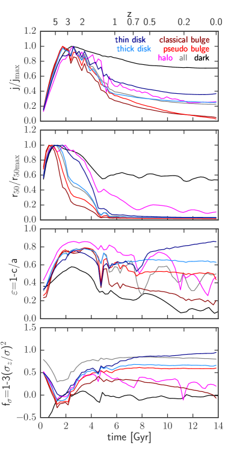
تعرض المنحنيات الملونة في الشكل 10 تطورات الدورانات (أعلى)، والأحجام (وسط علوي)، والأشكال (وسط سفلي)، وكسور تشتت السرعة (أسفل) للكتل اللاجرانجية لكل واحد من المكوّنات الحركية الخمسة في g8.26e11. وتعطي المنحنيات الرمادية التطورات المقابلة لجميع الجسيمات النجمية للمجرة عند ، بينما تمثل المنحنيات السوداء الكتلة اللاجرانجية لهالة المادة المظلمة . وقد طبع كل من الدورانات والأحجام إلى قيمه العظمى المعنية لتسهيل المقارنة بين المكوّنات المجرية المختلفة.
في الحقب المبكرة تنمو دورانات جميع المكوّنات تقريباً خطياً مع الزمن حتى تبلغ قيمها العظمى، عند انزياحات حمراء حول . ويعيد هذا السلوك المبكر إنتاج تنبؤات نظرية عزم المد (Hoyle, 1951; Peebles, 1969; Doroshkevich, 1970; White, 1984) على نحو جيد، والتي تربط اكتساب الزخم الزاوي في المجرات البدئية بالعزوم المستحثة في المناطق الكونية المتجاورة المنهارة بعضها بفعل بعض. وفي هذا الإطار، يتوقع للمنطقة المنهارة أن تبلغ زخمها الزاوي الأعظمي عندما تصل إلى امتدادها الأعظمي وينفصل تطورها عن التمدد الكوني. وفي نموذج الانهيار الكروي يسمى هذا الزمن زمن الدوران العكسي. لذلك يمكننا أن نعرّف بداية انهيار هالة g8.26e11 بهذا الانزياح الأحمر للدوران العكسي، . بعد هذا الزمن تفقد جميع المكوّنات جزءاً من زخومها الزاوية، إذ تفقد المادة المظلمة فقط، بينما يفقد الانتفاخان أكثر من . ومن بين المكوّنات الحركية الخمسة، يفقد القرص الرقيق القدر الأقل، . وقد عرض Domínguez-Tenreiro et al. (2015) تطوراً نوعياً مشابهاً للزخم الزاوي النوعي لمكوّني القرص والجسم الكرواني الديناميكيين في مجرتين محاكاتين.
كما بيّنا من قبل في القسم 5، فإن السرعة الدائرية الكلية للمجرة المحاكاة شبيهة جداً بتلك الخاصة بـ MW. كما أن سرعاتها الدورانية لمكوّناتها النجمية المختلفة تتفق جيداً جداً مع أرصاد MW في الجوار الشمسي، بينما تتفق أطوال مقياس القرص أو الأقراص مع قياسات كل من MW والمجرات الخارجية. وفي ضوء هذه النتائج، فإن فقدان الزخم الزاوي الذي وجدناه خاصية حقيقية للانهيار والتجمع الباريونيين، وليس أثراً لما يسمى “مشكلة الزخم الزاوي” (Navarro & Steinmetz, 2000) التي أثرت في أجيال سابقة من المحاكيات. وقد حلت هذه المشكلة إلى حد كبير بتحسين المخططات العددية (مثلاً Serna et al., 2003)، وزيادة الدقة (مثلاً Governato et al., 2004)، وتنفيذ عمليات التغذية الراجعة (مثلاً Okamoto et al., 2005).
يسهل تحديد الاندماج عند في كل من رسم تطور الأحجام (وسط أعلى الشكل 10) ورسم الأشكال (وسط أسفل). وتمثل هذه الحقبة بلوغ الهالة حالة التوازن الفيريالي، ، كما يتضح من بلوغ للمادة المظلمة قيمته التوازنية، ومن الانخفاضات الحادة في تطور أشكال القرص الرقيق والانتفاخين الكلاسيكي والشبهي، . ويتبع انهيار المكوّنات الحركية المختلفة التسلسل نفسه لتواريخ SFR الخاصة بها، حيث تكون الانتفاخات الكلاسيكية أولاً والقرص الرقيق أخيراً. وكما من قبل، لا تتبع الهالة النجمية تطور المكوّنات الحركية الأخرى، بل تشبه أكثر المادة المظلمة، أي إن التموجات في تطور أحجام الهالة النجمية وهالة المادة المظلمة مترابطة.
تفقد كل المكوّنات الحركية الخمسة في g8.26e11 الزخم الزاوي بمعدل أسرع بين و مما يحدث لاحقاً. وباستخدام القرص الرقيق استثناءً، تكوّن المكوّنات الأربعة الأخرى أيضاً جزءاً كبيراً من نجومها خلال الحقبة نفسها. ومن ثم تتكوّن هذه النجوم في بيئة شديدة الاضطراب، أي في هالة أو هالات المادة المظلمة المنهارة، حيث يتغير الكمون الثقالي على مقاييس زمنية قصيرة. ويشير ذلك إلى أن العملية الفيزيائية المهيمنة المسؤولة عن فقدان النجوم للزخم الزاوي خلال هذا الزمن هي الاسترخاء العنيف (Lynden-Bell, 1967). كما توفر لاتناظرات الكمون الثقالي الناتجة عن الاندماجات آلية فعالة لنقل زخم الغاز الزاوي. ويمكن للغاز أيضاً أن يفقد الزخم الزاوي عبر الاحتكاك الديناميكي (Chandrasekhar, 1943; Leeuwin & Combes, 1997)، وهي عملية فيزيائية تعتمد آثارها في المحاكيات على الدقة وعلى الخوارزميات العددية المستخدمة معاً (Semelin & Combes, 2002).
أحد التفسيرات الممكنة للخسارة الصغيرة للزخم الزاوي في مكوّن القرص الرقيق هو أن غاز أسلافه كان جزءاً من الهالة الساخنة قبل وصوله إلى المستوى الاستوائي (Athanassoula et al., 2016). ويجد Peschken et al. (2017) في محاكيات اندماج معدة مسبقاً أن هذا يبدو هو الحال، إذ يزداد الزخم الزاوي للأقراص مع الزمن على حساب الزخم الزاوي للهالة الغازية (Eggen et al., 1962). ومع أن الغاز السلف للقرص الحركي الرقيق في g8.26e11 ربما مر بمرحلة الهالة الساخنة، فإن نتائجنا تشير إلى أن السبب الرئيسي لحفظ زخمه الزاوي هو ببساطة أن جزءاً كبيراً من هذه المادة يتراكم على المجرات في أزمنة تكون فيها هالة المادة المظلمة قد بلغت حالة التوازن الفيريالي بالفعل، وبذلك لا توجد آلية فيزيائية قادرة على تغييره بدرجة كبيرة.
في اللوحتين السفليتين من الشكل 10 نقدّر مدى كون المكوّنات الخمسة، والمجرة كلها وهالة المادة المظلمة، شبيهة بالأقراص في الشكل ( قريب من ) وفي الدعم الدوراني ( قريب من 1). وعند الانزياحات الحمراء العالية تمتلك جميع المكوّنات قيماً مرتفعة من لأن مادتها جزء من البنية الخيطية واسعة النطاق. ومع تجمع المادة المظلمة، يتطور شكلها نحو التناظر الكروي () ويستقر دعمها الدوراني عند الصفر، كما هو متوقع. وبالنسبة إلى كل المكوّنات الباريونية المعروضة، تتطور الأشكال من إلى نحو التناظر الكروي، بينما يزداد الدعم الدوراني. بعد ، تظهر سلوكيات مختلفة. تفقد مادة الانتفاخ الكلاسيكي كل دعمها الدوراني، وتنتهي كنظام يهيمن عليه تشتت السرعات مع إهليلجية صغيرة . ويظهر الانتفاخ الشبهي والقرص السميك تطوراً شبه معدوم بين و، إذ تبلغ الإهليلجية النهائية للأول وللثاني . أما القرص الرقيق فيزيد من الخاص به حتى ومن الخاص به حتى واحد. ومن هاتين الخاصيتين الفيزيائيتين عند يتأهل بوضوح للاسم المختصر “قرص رقيق”.
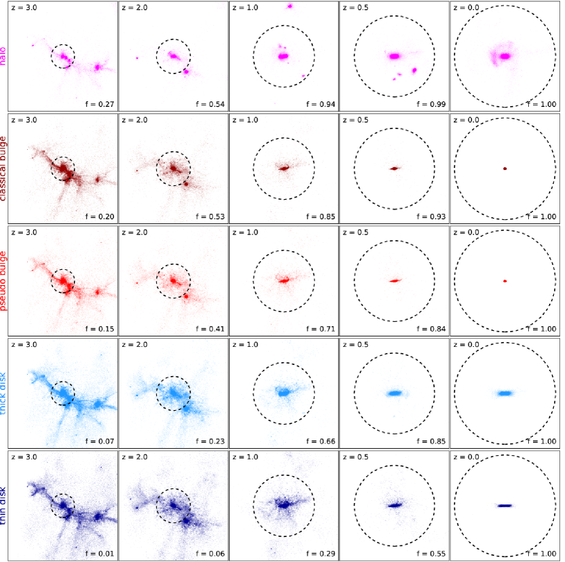
7.2 منظور بصري لتجمع البنى النجمية
للحصول على انطباع بصري عن مسارات التطور المختلفة للمكوّنات الحركية في g8.26e11، يبين الشكل 11 تسلسلاً في الانزياح الأحمر (من اليسار إلى اليمين) للتوزيع المكاني للجسيمات الباريونية التي تؤلف كل مكوّن منها (من الأعلى إلى الأسفل). وتعطي الأرقام في الزاوية اليمنى السفلى من كل لوحة كسور الكتلة النجمية الكلية للمكوّن المعين المعروض عند كل انزياح أحمر مقابل. ويجري تطبيع بالنسبة إلى الكتلة الباريونية الكلية لكل مكوّن على حدة. فعلى سبيل المثال، عند يكون فقط من مادة أسلاف القرص الرقيق قد تحول بالفعل إلى نجوم. وعند (العمود الأيسر) تحتل مادة الانتفاخ الكلاسيكي (الصف الثاني) أكثف مناطق البنية الخيطية واسعة النطاق التي تغذي هالة المادة المظلمة، بينما تكون مادة القرص الرقيق (الصف السفلي) هي الأكثر تخلخلاً. ومع تقدم التطور، يكون القرص الرقيق آخر ما ينهار، من دون احتساب الهالة النجمية التي تستغرق زمناً طويلاً لتجمع النجوم في التوابع الصغيرة الممزقة مدياً.
وبالنظر إلى هذه الإسقاطات مع تطور كسور النجوم والباريونات في الشكل 9، يبدو أن القرصين الرقيق والسميك كليهما يتكوّنان جزئياً من مادة تأتي على هيئة غاز جزءاً من البنية الخيطية الباريونية واسعة النطاق التي تتقلص وتنهار. ومن ناحية أخرى، يبدو أن الانتفاخين والهالة يراكمون معظم كتلهم عبر الاندماجات، بمعنى عبر التحام بنى متكوّنة مسبقاً. غير أننا نعلم من القسم 7 أن تكوّن النجوم يحدث غالباً عند انزياح أحمر عال وبصورة كاملة في الموضع بالنسبة إلى الانتفاخين (انظر القسم 7). وهذا يعني أن مادة أسلافهما من المجرة الأصغر الساقطة عند تهبط إلى مركز المجرة الرئيسية في صورة غازية ثم تتحول لاحقاً إلى نجوم. أما نجوم هذه المجرة الساقطة فتنتهي إلى أن تصبح جزءاً من القرصين النجميين عند انزياح أحمر ، ولا سيما السميك منهما، ومن الهالة النجمية.
8 ملخص واستنتاجات
نستخدم نظيراً محاكى واحداً لدرب التبانة (g8.26e11) من مجموعة مجرات NIHAO (Wang et al., 2015) لنبيّن كيف تستطيع نماذج المزائج الغاوسية في الفضاء الحركي النجمي للزخم الزاوي النوعي المطبع – طاقة الارتباط (، ،) أن تفك تداخل تنوع كبير من البنى النجمية المجرية.
8.1 كاشف البنية المجرية
يمكن تطبيق خط التحليل galactic structure finder (gsf) على أي مجرة محاكاة في حالة اتزان لفك تداخل البنية الدقيقة لتوزيعها النجمي (أقراص رقيقة/سميكة، انتفاخات كلاسيكية/شبهية، هالات نجمية، أجسام كروانية، أقراص/قضبان داخلية). تحسب الشفرة الكمون الثقالي N-body لهالة في عزلة بغرض حساب دائريات النجوم على نحو صحيح. وتستخدم هذه الدائريات مع الزخوم الزاوية النجمية المطبعة في المستوى الاستوائي للمجرة ومع طاقات الارتباط النجمية المطبعة بوصفها فضاء الإدخال لطريقة تجميع نماذج المزائج الغاوسية. ومعامل الإدخال الوحيد اللازم لتشغيل gsf هو عدد الغاوسيات . ويعتمد معامل على المسألة المراد دراستها وعلى دقة المحاكاة.
استخدمنا gsf على عينة من 25 مجرة عالية الدقة ( 106 جسيم لكل هالة) تمتد من الأقزام إلى أجسام أكبر كتلة من درب التبانة ببضع مرات (Wang et al., 2015) لدراسة خصائص البنى النجمية مثل الأقراص الرقيقة/السميكة، والهالات النجمية، وما إلى ذلك، فضلاً عن تاريخ تكوّنها. في عينة المجرات المحاكاة هذه، تمتلك الأجسام منخفضة الكتلة مكوّنين متميزين ديناميكياً فقط: قرصاً وجسماً كروانياً. وانطلاقاً من السعي إلى فك تداخل الهالات النجمية، وجدنا أن المجرات الأكبر كتلة تستضيف ما يصل إلى خمسة مكوّنات متميزة. وفي الدراسة الحالية نوضح كيفية عمل gsf على نظير محاكى لدرب التبانة.
في هذه الدراسة، اختير ما يسمى العدد الأمثل للمكوّنات النجمية بالفحص البصري لكثافة الكتلة السطحية وخرائط سرعة خط البصر. وأتمتة هذا الجزء عمل جار، هدفه تطبيق gsf على عينات كبيرة من المجرات المحاكاة.
8.2 المكوّنات المتعددة لنظير MW
تمتلك المجرة المثال عند ، g8.26e11، قرصين متميزين (رقيقاً وسميكاً)، وانتفاخين متميزين (كلاسيكياً وشبهياً)، وهالة نجمية. وتتوزع الكتلة النجمية تقريباً كما يلي: في القرص الرقيق، و في القرص السميك، و في الانتفاخ الكلاسيكي، و في الانتفاخ الشبهي، و في الهالة النجمية. لذلك تمتلك هذه المجرة نسبة قرص ديناميكي إلى المجموع مقدارها 0.54. وبالمقارنة، يعتقد أن درب التبانة تمتلك نسبة قرص إلى المجموع مقدارها 0.70 (مثلاً Bland-Hawthorn & Gerhard, 2016).
عند اتخاذ موضع مشابه لموضع الشمس في MW نقطة رصد، تكون g8.26e11 شبيهة بالمجرة على نحو لافت. فالسرعة الدائرية الكلية عند kpc لهذه المجرة المحاكاة تمر عبر نقاط البيانات المشتقة رصدياً لـ MW لدى Kafle et al. (2012)، وReid et al. (2014) وLópez-Corredoira (2014) (الشكل 5). ويمتلك القرصان الرقيق والسميك في المحاكاة سرعات دورانية عند موضع الشمس ( kpc) مقدارها و km s-1، على التوالي، وهي قيم تتفق جيداً جداً مع أرصاد MW (مثلاً Haywood et al., 2013). كما يستعاد للهالة النجمية المحلية (Bond et al., 2010) على نحو جيد ( km s-1). وعند ، تبلغ تشتتات السرعة العمودية للقرصين الرقيق والسميك و km s-1، على التوالي، وهي قيم قريبة من الحدود العليا الموجودة لـ MW (Binney, 2012; Robin et al., 2017).
منظوراً إليها كجسم خارج مجري، تمتلك البنية الحركية للقرص الرقيق مقطع دوران مسطحاً بقيمة km s-1 وتشتت سرعة عمودية صغيراً وثابتاً تقريباً مع نصف القطر بقيمة km s-1 (الشكل 6). وتبلغ تفلطحه المقاس من القيم الذاتية لموتر العطالة ، حيث تقابل الواحد قرصاً رقيقاً حاداً، ويقابل الصفر جسماً كروانياً مثالياً. أما القرص السميك، فيمتلك منحنى دوران متناقصاً، يتأخر بمقدار km s-1 عن القرص الرقيق عند جميع أنصاف الأقطار، وتشتت سرعة أكبر بكثير ( km s-1 عند نصف قطر مسقط حاف قدره kpc) يتناقص خطياً مع نصف القطر. ويبلغ تفلطح القرص السميك . أما المجرة ككل فتمتلك تشتت سرعة عمودية مركزياً كبيراً ( km s-1) بسبب وجود الانتفاخين الكلاسيكي والشبهي.
وتقدم المجرة المحاكاة أيضاً مثالاً جيداً على الفروق بين السرعات المختلفة المستخدمة للحكم على المجرات المحاكاة والمرصودة. فالمجرة المحاكاة في هذه الدراسة تمتلك عند جميع أنصاف الأقطار. والمكوّن النجمي الذي تكون قيمتا و الخاصتان به الأقرب إلى السرعة الدائرية الكلية هو القرص الرقيق. ومع أن للغاز البارد في هذه المجرة يتتبع جيداً جداً خارج منطقة الانتفاخ، فإن الخاص به أدنى بكثير. وتشير هذه النتائج بقوة إلى أن السرعات الدائرية للمجرات الخارجية، المبنية من السرعات المرصودة بعد تصحيحها لتأثيرات الميل، قد تكون ناقصة التقدير بدرجة مهمة.
خلافاً للتوقعات، يعرض كلا نوعي الأقراص مقاطع لكثافة الكتلة السطحية النجمية أكثر تركزاً مركزياً من الأسية الخالصة (الشكل 7). ومن جهة أخرى، فإن كثافة الكتلة السطحية للانتفاخين الكلاسيكي والشبهي، وللهالة النجمية، أسية. وتكون قيم التفلطح للانتفاخين الكلاسيكي والشبهي أقرب إلى التناظر الكروي، و، على التوالي. وبصورة أساسية، تمتلك البنية النجمية الحركية التي نسميها انتفاخاً كلاسيكياً كل الخصائص المتوقعة، باستثناء مقطع كثافة الكتلة. فهي متراصة، وشبه كروية التناظر، ولا تمتلك دوراناً صافياً، ومؤلفة من نجوم قديمة. وتثير هذه النتيجة أسئلة مثيرة بشأن طبيعة الانتفاخات الكلاسيكية كما تستنتج من القياس الضوئي للمجرات، الذي يتنبأ بمؤشرات Sérsic عالية () لهذا النوع من البنى النجمية.
إن تاريخ تكوّن النجوم وتاريخ تجمع الكتلة النجمية لهذه المجرة (الشكل 9) مشابهان لنظيريهما المشتقين رصدياً لمجرة ذات كتلة درب التبانة (van Dokkum et al., 2013). وعند تفكيك SFR الكلي إلى مساهمات المكوّنات الخمسة، نجد أن البنى التي يهيمن عليها التشتت (الانتفاخان والهالة النجمية) كوّنت معظم نجومها عند انزياح أحمر عال ()، إذ تقع قمم SFR الخاصة بها عند . ويمتلك القرص السميك SFR ممتداً جداً مع قمة مسطحة إلى حد كبير ( M⊙yr-1) بين و، بينما يكوّن القرص الرقيق نجومه بمعدل ثابت قدره M⊙yr-1 بين و. وعالمياً، كوّنت هذه المجرة نصف نجومها بحلول . وتشكل انزياحات تكوّن نصف الكتلة النجمية، ، للبنى الخمس تسلسلاً، مع ، و2.13، و1.79، و1.35، و0.57 للهالة النجمية، والانتفاخ الكلاسيكي، والانتفاخ الشبهي، والقرص السميك، والقرص الرقيق، على التوالي.
من الفوائد الكبرى لطريقتنا أنها تتيح دراسة تواريخ تكوّن هذه البنى المختلفة بتتبع الكتلة اللاجرانجية لكل منها على حدة عائداً في الزمن. وفي الواقع، ينبغي أن يكون هذا التحليل مباشراً نسبياً في أي شفرة محاكاة قائمة على الجسيمات. وبهذه الطريقة، على سبيل المثال، يمكننا قياس فقدان الزخم الزاوي بدقة بين حقبة الدوران العكسي لهالة المادة المظلمة و لكل بنية حركية نجمية. وبالنسبة إلى هذه المجرة تحديداً، تفقد مادة القرص الرقيق أصغر كسر من زخمها الزاوي الأعظمي ( في المئة)، بينما يفقد الانتفاخ الكلاسيكي القدر الأكبر ( في المئة). وبالمثل، تفقد هالة المادة المظلمة فقط في المئة من زخمها الزاوي الأعظمي. ومن خلال رسم تطور معاملات مختلفة، مثل نصف قطر نصف الكتلة، والشكل، والدعم الدوراني و/أو الزخم الزاوي النوعي، لكل مكوّن حركي نجمي وكذلك لهالة المادة المظلمة، يمكن تحديد الحقب المهمة في تكوّن المجرة (الشكل 10). وبهذه الطريقة وجدنا أن انزياح التوقف عن التمدد لهذه المجرة هو ، في حين ينتهي بلوغ هالة مادتها المظلمة حالة التوازن الفيريالي بحلول . وبالنسبة إلى كل المكوّنات النجمية وكذلك إلى هالة المادة المظلمة، يحدث أكبر فقدان للزخم الزاوي بين هاتين الحقبتين.
عند الانزياحات الحمراء العالية تعرض كل المكوّنات الحركية النجمية الخمسة بنية مكانية خيطية، تزول أولاً في البنى التي يهيمن عليها التشتت، وآخراً في البنى التي يهيمن عليها الدوران (الشكل 11). كوّن الانتفاخان في هذه المجرة كل نجومهما في الموضع، في حين يراكم القرص السميك ويكوّن الباقي في الموضع. ويمتلك القرص الرقيق أيضاً كسراً صغيراً من النجوم المتراكمة مقداره . إن القرص النجمي السميك في هذه المجرة المحاكاة يتكوّن سميكاً (Brook et al., 2004). وللهالة النجمية تاريخ تجمع مختلف عن المكوّنات الأربعة الأخرى، إذ تكون نصف كتلتها النجمية على الأقل في توابع صغيرة تندمج لاحقاً في المجرة السلف وتدمر مدياً في هذه العملية. غير أن كسراً مهماً () من الهالة النجمية لهذه المجرة يتكوّن في الموضع (مثلاً Cooper et al., 2015).
8.3 تطبيقات gsf الجارية والمستقبلية
أخيراً، نود أن نذكر مسبقاً أننا في ورقة مرافقة (Obreja et al., 2018) نوسع التحليل المعروض هنا إلى مجموعة أكبر من 25 مجرة من NIHAO، في محاولة أولى لتقييد أنماط تكوّن البنى النجمية الفرعية مثل الأقراص الرقيقة/السميكة، والانتفاخات الكلاسيكية/الشبهية، والهالات النجمية، والأقراص النجمية الداخلية والأجسام الكروانية النجمية.
شهدت السنوات الأخيرة تقدماً كبيراً في مجال محاكيات المجرات عالية الدقة، مما أدى إلى مجرات أكثر واقعية باطراد. غير أن المجموعات المختلفة النشطة في هذا المجال تستخدم شفرات محاكاة توظف تنفيذات مختلفة للفيزياء دون الشبكية. لذلك من المهم جداً فهم الفروق التفصيلية بين هذه الشفرات من حيث البنية الدقيقة للمجرات، حتى يمكن تحسين نماذج تكوّن المجرات بالمقارنة مع البيانات الرصدية. ومن هذا المنظور، فإن الجيل الجديد من محاكيات التكبير الكونية ذات الدقات العالية جداً (مثلاً Grand et al., 2017; Hopkins et al., 2017; Buck et al., 2018) مختبر مثالي لدراسة نشوء البنى النجمية المجرية. ولهذه الأسباب نعتقد أن خط التحليل الخاص بنا سيفتح الطريق إلى فهم أفضل لتكوّن البنى النجمية إذا طبق بطريقة متسقة على الثروة الحالية والمستقبلية من محاكيات التكبير عالية الدقة. ولتعزيز مثل هذه الدراسات، فإننا نتيح gsf للعامة عند https://github.com/aobr/gsf.
شكر وتقدير
نود أن نشكر المحكم المجهول على تقرير بنّاء ساعد في تحسين جودة هذه المخطوطة. كما نود أن نشكر Glenn van de Ven وFabrizio Arrigoni Battaia وRosa Domínguez Tenreiro وChris Brook على الأحاديث المفيدة. أُنتجت جميع الأشكال في هذا العمل باستخدام matplotlib (Hunter, 2007). وتستخدم شفرة gsf أيضاً مكتبتي Python numpy (Walt et al., 2011) وscipy (Eric Jones et al., 2001). وقد استُخدم F2PY (Peterson, 2009) لتجميع وحدة Fortran من أجل Python. أجري هذا البحث على موارد الحوسبة عالية الأداء في New York University Abu Dhabi؛ وعلى عنقود theo في Max-Planck-Institut für Astronomie وعلى عناقيد hydra في Rechenzentrum في Garching. ونقدّر تقديراً كبيراً مساهمات هذه المخصصات الحاسوبية. وقد مُوّل AO وBM من Deutsche Forschungsgemeinschaft (DFG, German Research Foundation) – MO 2979/1-1. ويقر TB بالدعم المقدم من Sonderforschungsbereich SFB 881 “The Milky Way System” (المشروع الفرعي A1) التابع لـ DFG.
References
- Abadi et al. (2003) Abadi M. G., Navarro J. F., Steinmetz M., Eke V. R., 2003, ApJ, 597, 21
- Aguerri et al. (2001) Aguerri J. A. L., Balcells M., Peletier R. F., 2001, A&A, 367, 428
- Aguerri et al. (2009) Aguerri J. A. L., Méndez-Abreu J., Corsini E. M., 2009, A&A, 495, 491
- Andredakis & Sanders (1994) Andredakis Y. C., Sanders R. H., 1994, MNRAS, 267, 283
- Andredakis et al. (1995) Andredakis Y. C., Peletier R. F., Balcells M., 1995, MNRAS, 275, 874
- Athanassoula (2005) Athanassoula E., 2005, MNRAS, 358, 1477
- Athanassoula et al. (2016) Athanassoula E., Rodionov S. A., Peschken N., Lambert J. C., 2016, ApJ, 821, 90
- Aumer et al. (2013) Aumer M., White S. D. M., Naab T., Scannapieco C., 2013, MNRAS, 434, 3142
- Becklin & Neugebauer (1968) Becklin E. E., Neugebauer G., 1968, ApJ, 151, 145
- Behroozi et al. (2013) Behroozi P. S., Wechsler R. H., Conroy C., 2013, ApJ, 770, 57
- Bernardi et al. (2014) Bernardi M., Meert A., Vikram V., Huertas-Company M., Mei S., Shankar F., Sheth R. K., 2014, MNRAS, 443, 874
- Binney (2012) Binney J., 2012, MNRAS, 426, 1328
- Binney & Piffl (2015) Binney J., Piffl T., 2015, MNRAS, 454, 3653
- Bland-Hawthorn & Gerhard (2016) Bland-Hawthorn J., Gerhard O., 2016, ARA&A, 54, 529
- Bond et al. (2010) Bond N. A., Ivezić Ž., Sesar B., et al. 2010, ApJ, 716, 1
- Bottrell et al. (2017) Bottrell C., Torrey P., Simard L., Ellison S. L., 2017, MNRAS, 467, 2879
- Brook et al. (2004) Brook C. B., Kawata D., Gibson B. K., Freeman K. C., 2004, ApJ, 612, 894
- Brook et al. (2012) Brook C. B., Stinson G., Gibson B. K., Wadsley J., Quinn T., 2012, MNRAS, 424, 1275
- Brooks (2008) Brooks A., 2008, PhD thesis, University of Washington
- Buck et al. (2017) Buck T., Macciò A. V., Obreja A., Dutton A. A., Domínguez-Tenreiro R., Granato G. L., 2017, MNRAS, 468, 3628
- Buck et al. (2018) Buck T., Macciò A. V., Dutton A. A., Obreja A., Frings J., 2018, preprint, (arXiv:1804.04667)
- Carollo et al. (2007) Carollo D., Beers T. C., Lee Y. S., et al. 2007, Nature, 450, 1020
- Chabrier (2003) Chabrier G., 2003, PASP, 115, 763
- Chandrasekhar (1943) Chandrasekhar S., 1943, ApJ, 97, 255
- Christensen et al. (2014) Christensen C. R., Brooks A. M., Fisher D. B., Governato F., McCleary J., Quinn T. R., Shen S., Wadsley J., 2014, MNRAS, 440, L51
- Comerón et al. (2011) Comerón S., Elmegreen B. G., Knapen J. H., et al. 2011, ApJ, 741, 28
- Comerón et al. (2014) Comerón S., Elmegreen B. G., Salo H., Laurikainen E., Holwerda B. W., Knapen J. H., 2014, A&A, 571, A58
- Cooper et al. (2015) Cooper A. P., Parry O. H., Lowing B., Cole S., Frenk C., 2015, MNRAS, 454, 3185
- Dalcanton & Bernstein (2002) Dalcanton J. J., Bernstein R. A., 2002, AJ, 124, 1328
- Davies & Illingworth (1983) Davies R. L., Illingworth G., 1983, ApJ, 266, 516
- Dehnen & Aly (2012) Dehnen W., Aly H., 2012, MNRAS, 425, 1068
- Doménech-Moral et al. (2012) Doménech-Moral M., Martínez-Serrano F. J., Domínguez-Tenreiro R., Serna A., 2012, MNRAS, p. 2503
- Domínguez-Tenreiro et al. (2015) Domínguez-Tenreiro R., Obreja A., Brook C. B., Martínez-Serrano F. J., Stinson G., Serna A., 2015, ApJ, 800, L30
- Doroshkevich (1970) Doroshkevich A. G., 1970, Astrofizika, 6, 581
- Dutton et al. (2017) Dutton A. A., Obreja A., Wang L., et al. 2017, MNRAS, 467, 4937
- Eggen et al. (1962) Eggen O. J., Lynden-Bell D., Sandage A. R., 1962, ApJ, 136, 748
- Elmegreen et al. (2017) Elmegreen B. G., Elmegreen D. M., Tompkins B., Jenks L. G., 2017, ApJ, 847, 14
- Eric Jones et al. (2001) Eric Jones Travis Oliphant P. P., et al., 2001, SciPy: Open source scientific tools for Python, http://www.scipy.org/
- Ferrarese & Merritt (2000) Ferrarese L., Merritt D., 2000, ApJ, 539, L9
- Fisher & Drory (2008) Fisher D. B., Drory N., 2008, AJ, 136, 773
- Gadotti (2009) Gadotti D. A., 2009, MNRAS, 393, 1531
- Gebhardt et al. (2000) Gebhardt K., Bender R., Bower G., et. al 2000, ApJ, 539, L13
- Gilmore & Reid (1983) Gilmore G., Reid N., 1983, MNRAS, 202, 1025
- González-García & van Albada (2005) González-García A. C., van Albada T. S., 2005, MNRAS, 361, 1030
- Governato et al. (2004) Governato F., Mayer L., Wadsley J., et al. 2004, ApJ, 607, 688
- Graham & Guzmán (2003) Graham A. W., Guzmán R., 2003, AJ, 125, 2936
- Grand et al. (2017) Grand R. J. J., et al., 2017, MNRAS, 467, 179
- Guidi et al. (2016) Guidi G., Scannapieco C., Walcher J., Gallazzi A., 2016, MNRAS, 462, 2046
- Haardt & Madau (2012) Haardt F., Madau P., 2012, ApJ, 746, 125
- Hammersley et al. (2000) Hammersley P. L., Garzón F., Mahoney T. J., López-Corredoira M., Torres M. A. P., 2000, MNRAS, 317, L45
- Häring & Rix (2004) Häring N., Rix H.-W., 2004, ApJ, 604, L89
- Haywood et al. (2013) Haywood M., Di Matteo P., Lehnert M. D., Katz D., Gómez A., 2013, A&A, 560, A109
- Hopkins et al. (2014) Hopkins P. F., Kereš D., Oñorbe J., Faucher-Giguère C.-A., Quataert E., Murray N., Bullock J. S., 2014, MNRAS, 445, 581
- Hopkins et al. (2017) Hopkins P. F., Wetzel A., Keres D., et al. 2017, preprint, (arXiv:1702.06148)
- Hoyle (1951) Hoyle F., 1951, in Problems of Cosmical Aerodynamics. p. 195
- Hunter (2007) Hunter J. D., 2007, Computing in Science and Engineering, 9, 90
- Jahnke & Macciò (2011) Jahnke K., Macciò A. V., 2011, ApJ, 734, 92
- Kafle et al. (2012) Kafle P. R., Sharma S., Lewis G. F., Bland-Hawthorn J., 2012, ApJ, 761, 98
- Kannan et al. (2015) Kannan R., Macciò A. V., Fontanot F., Moster B. P., Karman W., Somerville R. S., 2015, MNRAS, 452, 4347
- Knollmann & Knebe (2009) Knollmann S. R., Knebe A., 2009, ApJS, 182, 608
- Koda et al. (2015) Koda J., Yagi M., Yamanoi H., Komiyama Y., 2015, ApJ, 807, L2
- Kormendy & Barentine (2010) Kormendy J., Barentine J. C., 2010, ApJ, 715, L176
- Kormendy & Kennicutt (2004) Kormendy J., Kennicutt Jr. R. C., 2004, ARA&A, 42, 603
- Leeuwin & Combes (1997) Leeuwin F., Combes F., 1997, MNRAS, 284, 45
- López-Corredoira (2014) López-Corredoira M., 2014, A&A, 563, A128
- Lynden-Bell (1967) Lynden-Bell D., 1967, MNRAS, 136, 101
- Lynden-Bell & Kalnajs (1972) Lynden-Bell D., Kalnajs A. J., 1972, MNRAS, 157, 1
- Marinacci et al. (2014) Marinacci F., Pakmor R., Springel V., 2014, MNRAS, 437, 1750
- Martig et al. (2012) Martig M., Bournaud F., Croton D. J., Dekel A., Teyssier R., 2012, ApJ, 756, 26
- Martinsson et al. (2013) Martinsson T. P. K., Verheijen M. A. W., Westfall K. B., Bershady M. A., Schechtman-Rook A., Andersen D. R., Swaters R. A., 2013, A&A, 557, A130
- Méndez-Abreu et al. (2014) Méndez-Abreu J., Debattista V. P., Corsini E. M., Aguerri J. A. L., 2014, A&A, 572, A25
- Mosenkov et al. (2014) Mosenkov A. V., Sotnikova N. Y., Reshetnikov V. P., 2014, MNRAS, 441, 1066
- Moster et al. (2013) Moster B. P., Naab T., White S. D. M., 2013, MNRAS, 428, 3121
- Navarro & Steinmetz (2000) Navarro J. F., Steinmetz M., 2000, ApJ, 538, 477
- Nowak et al. (2010) Nowak N., Thomas J., Erwin P., Saglia R. P., Bender R., Davies R. I., 2010, MNRAS, 403, 646
- Obreja et al. (2014) Obreja A., Brook C. B., Stinson G., Domínguez-Tenreiro R., Gibson B. K., Silva L., Granato G. L., 2014, MNRAS, 442, 1794
- Obreja et al. (2016) Obreja A., Stinson G. S., Dutton A. A., Macciò A. V., Wang L., Kang X., 2016, MNRAS, 459, 467
- Obreja et al. (2018) Obreja A., Dutton A. A., Macciò A. V., et al. 2018, preprint, (arXiv:1804.06635)
- Okamoto et al. (2005) Okamoto T., Eke V. R., Frenk C. S., Jenkins A., 2005, MNRAS, 363, 1299
- Okuda et al. (1977) Okuda H., Maihara T., Oda N., Sugiyama T., 1977, Nature, 265, 515
- Pedregosa et al. (2011) Pedregosa F., Varoquaux G., Gramfort A., et al. 2011, Journal of Machine Learning Research, 12, 2825
- Peebles (1969) Peebles P. J. E., 1969, ApJ, 155, 393
- Peschken et al. (2017) Peschken N., Athanassoula E., Rodionov S. A., 2017, MNRAS, 468, 994
- Peterson (2009) Peterson P., 2009, International Journal of Computational Science and Engineering, 4, 296
- Piffl et al. (2014) Piffl T., Binney J., McMillan P. J., et al. 2014, MNRAS, 445, 3133
- Pontzen et al. (2013) Pontzen A., Roškar R., Stinson G., Woods R., 2013, pynbody: N-Body/SPH analysis for python, Astrophysics Source Code Library (ascl:1305.002)
- Price (2008) Price D. J., 2008, Journal of Computational Physics, 227, 10040
- Reid et al. (2014) Reid M. J., Menten K. M., Brunthaler A., et al. 2014, ApJ, 783, 130
- Ritchie & Thomas (2001) Ritchie B. W., Thomas P. A., 2001, MNRAS, 323, 743
- Robin et al. (2017) Robin A. C., Bienaymé O., Fernández-Trincado J. G., Reylé C., 2017, A&A, 605, A1
- Rubin et al. (1980) Rubin V. C., Ford Jr. W. K., Thonnard N., 1980, ApJ, 238, 471
- Saitoh & Makino (2009) Saitoh T. R., Makino J., 2009, ApJ, 697, L99
- Sandage (1961) Sandage A., 1961, The Hubble Atlas of Galaxies
- Sanders & Binney (2015) Sanders J. L., Binney J., 2015, MNRAS, 449, 3479
- Scannapieco et al. (2010) Scannapieco C., Gadotti D. A., Jonsson P., White S. D. M., 2010, MNRAS, 407, L41
- Scannapieco et al. (2011) Scannapieco C., White S. D. M., Springel V., Tissera P. B., 2011, MNRAS, 417, 154
- Schaye et al. (2015) Schaye J., Crain R. A., Bower R. G., et al. 2015, MNRAS, 446, 521
- Schölkopf et al. (1998) Schölkopf B., Smola A., Müller K.-R., 1998, Neural Comput., 10, 1299
- Searle & Zinn (1978) Searle L., Zinn R., 1978, ApJ, 225, 357
- Semelin & Combes (2002) Semelin B., Combes F., 2002, A&A, 387, 98
- Serna et al. (2003) Serna A., Domínguez-Tenreiro R., Sáiz A., 2003, ApJ, 597, 878
- Shen et al. (2010) Shen S., Wadsley J., Stinson G., 2010, MNRAS, 407, 1581
- Sofue et al. (2009) Sofue Y., Honma M., Omodaka T., 2009, PASJ, 61, 227
- Staveley-Smith & Davies (1988) Staveley-Smith L., Davies R. D., 1988, MNRAS, 231, 833
- Stinson et al. (2006) Stinson G., Seth A., Katz N., Wadsley J., Governato F., Quinn T., 2006, MNRAS, 373, 1074
- Stinson et al. (2013) Stinson G. S., Brook C., Macciò A. V., Wadsley J., Quinn T. R., Couchman H. M. P., 2013, MNRAS
- Thielemann et al. (1986) Thielemann F.-K., Nomoto K., Yokoi K., 1986, A&A, 158, 17
- Tully & Fisher (1977) Tully R. B., Fisher J. R., 1977, A&A, 54, 661
- Wadsley et al. (2004) Wadsley J. W., Stadel J., Quinn T., 2004, New Astron., 9, 137
- Wadsley et al. (2008) Wadsley J. W., Veeravalli G., Couchman H. M. P., 2008, MNRAS, 387, 427
- Wadsley et al. (2017) Wadsley J. W., Keller B. W., Quinn T. R., 2017, MNRAS, 471, 2357
- Walt et al. (2011) Walt S. v. d., Colbert S. C., Varoquaux G., 2011, Computing in Science and Engineering, 13, 22
- Wang et al. (2015) Wang L., Dutton A. A., Stinson G. S., Macciò A. V., Penzo C., Kang X., Keller B. W., Wadsley J., 2015, MNRAS, 454, 83
- White (1984) White S. D. M., 1984, ApJ, 286, 38
- Woosley & Weaver (1995) Woosley S. E., Weaver T. A., 1995, ApJS, 101, 181
- Yoachim & Dalcanton (2006) Yoachim P., Dalcanton J. J., 2006, AJ, 131, 226
- Yoachim & Dalcanton (2008) Yoachim P., Dalcanton J. J., 2008, ApJ, 682, 1004
- van Dokkum et al. (2013) van Dokkum P. G., Leja J., Nelson E. J., et al. 2013, ApJ, 771, L35
- van Dokkum et al. (2015) van Dokkum P. G., Abraham R., Merritt A., Zhang J., Geha M., Conroy C., 2015, ApJ, 798, L45
- van der Wel et al. (2012) van der Wel A., Bell E. F., Häussler B., et. al 2012, ApJS, 203, 24